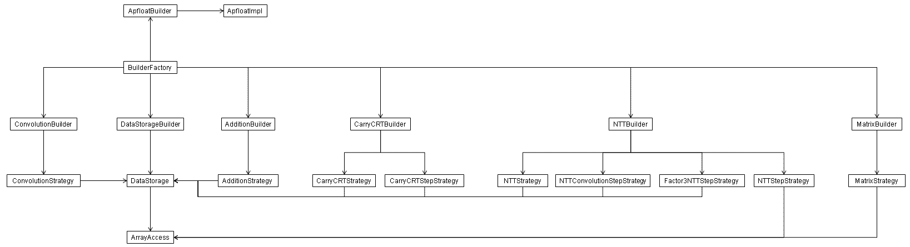

Package org.apfloat.spi
The apfloat API is a high-level API that defines algorithms on the level of
e.g. the Newton iteration for the inverse of a number. Behind this high-level
API there is a lot of low-level functionality that makes all the arbitrary
precision arithmetic happen. The digits of a large number are stored in an
array of ints, for example. In fact, an Apfloat
is structurally just a pointer to an ApfloatImpl, and
most of the functionality of the Apfloat class is simply delegated to the
underlying ApfloatImpl.
The apfloat SPI defines the general interface for the low-level things that must happen behind the scenes of the high-level API. An actual implementation of the SPI can be optimized for different things, for example:
- Size of numbers: different algorithms are efficient for numbers with with 1000 or 1000000 digits. This applies both to the actual storage method of the data, and the mathematical algorithms used for e.g. multiplying numbers.
- Memory consumption vs. performance: different types of Fast Fourier Transform (FFT) based algorithms can be used to find a suitable trade-off between memory consumption and performance.
- Hardware architecture: 32-bit and 64-bit systems handle
intandlongtype elements correspondingly most efficiently, for example. Some systems perform floating-point operations (withfloatordoubletype elements) faster than integer operations (intorlong). - Complexity: a more complex implementation may be optimized for different cases, however more code will take more space and use more memory. This may be a concern on some systems (e.g. mobile devices).
BuilderFactory
interface, and actually only the BuilderFactory.getApfloatBuilder()
method in this interface. All apfloat implementations (ApfloatImpl)
are created through the ApfloatBuilder interface's
methods. The rest of the interfaces in the SPI exist only for the convenience
of the default apfloat SPI implementations (org.apfloat.internal).The apfloat SPI suggests the usage of various patterns, as encouraged by the specification of all the interfaces in the SPI. These patterns include:
- Abstract factory pattern, for getting instances of the various builders,
as well as other types of components built by the different builders
(
ApfloatBuilder,DataStorageBuilder,ConvolutionBuilder,NTTBuilder). - Factory method pattern; obviously the abstract factories use factory methods to create instances of objects.
- Builder pattern: an
ApfloatImplneeds various "parts" for its structural construction (DataStorage) as well as its behavior (ConvolutionStrategy). Builders are used to build the different sub-parts needed, and the ApfloatImpl itself only knows the high-level algorithm for how the parts are used and related. The construction of the sub-part details is left for the builders, and the ApfloatImpl accesses the parts only via an interface. - Strategy pattern: for multiplying numbers, completely different algorithms
are optimal, depending on the size of the numbers. The
ConvolutionStrategydefines different convolution algorithms to be used in the multiplication. For very large numbers, a transform-based convolution can be used, and even a different transform strategy can be specified via theNTTStrategyinterface. - Iterators are used for iterating through
DataStorageelements in a highly flexible manner. The base class isDataStorage.Iterator. For example, a data storage that uses a simple array to store the entire data set in memory can return a simple iterator that goes through the array element by element. In comparison, a data storage that stores the data in a disk file, can have an iterator that reads blocks of data from the file to a memory array, and then iterates through the array, one block at a time. - Singleton pattern, assumed to be used in the
BuilderFactoryclass, as there should be no need to have more than one instance of each builder class. Also the BuilderFactory instance itself is a singleton, within anApfloatContext. - Bridge pattern: the SPI itself is the bridge pattern. An
Apfloatprovides a simple high-level programming interface and the complex technical implementation details are delegated to anApfloatImpl. The Apfloat class can be subclassed for additional functionality, and independent of that, different subclasses of an ApfloatImpl can be used to optimize the implementation.

The class implementing BuilderFactory that is used in
creating apfloat implementations is defined in the ApfloatContext.
You can set the BuilderFactory instance programmatically by calling
ApfloatContext.setBuilderFactory(BuilderFactory),
for example:
BuilderFactory builderFactory = new MyBuilderFactory(); ApfloatContext.getContext().setBuilderFactory(builderFactory);It's a lot easier to specify this to happen automatically whenever your program starts. To do this just specify the BuilderFactory class name in the
apfloat.properties file (or the apfloat ResourceBundle if you use one).
For example, the apfloat.properties file might contain the line:
builderFactory=org.mycompany.MyBuilderFactoryFor more details about configuring the apfloat BuilderFactory, see the documentation for
ApfloatContext.- See Also:
org.apfloat.internal
-
Interface SummaryInterfaceDescriptionInterface of a factory for creating addition strategies.Generic addition strategy.An ApfloatBuilder contains factory methods to create new instances of
ApfloatImplimplementations.Interface for apfloat implementations.ABuilderFactoryobject contains factory methods for building the various parts of an apfloat using the Builder pattern.Interface of a factory for creating carry-CRT related objects.Interface for performing the steps of a carry-CRT operation in a convolution.Interface for performing the final step of a three-modulus Number Theoretic Transform based convolution.Interface of a factory for creating convolutors.Generic convolution strategy.Interface for determining a suitable storage type for data of some expected size.Interface of a factory for creating execution related objects.Thread execution operations.Steps for the factor-3 NTT.Interface of a factory for creating matrix related objects.Matrix operations.Interface of a factory for creating Number Theoretic Transforms.Steps for a three-NTT convolution.Steps for the six-step or two-pass NTT.Number Theoretic Transform (NTT) strategy.Constants related to different radixes. -
Class SummaryClassDescriptionThe
ArrayAccessclass simulates aClanguage pointer.Generic data storage class.Iterator for iterating through elements of the data storage.Class for generating filenames for temporary files.Miscellaneous utility methods.